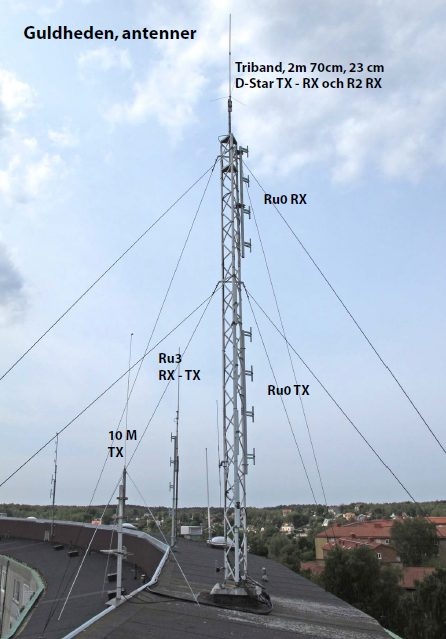

GSA driver sex repeatrar i Göteborg — två på HF (10 m och 6 m), en på VHF (2 m) och tre på UHF (70 cm). Du som vill höra på trafiken kan lyssna på utfrekvensen för varje repeater. Vill du fördjupa dig i hur SvxLink fungerar finns SvxLink repeaterskola.
Våra repeatrar på 2 m och 70 cm är inkopplade i detta förnäma system, där du kan vidarekoppla dig runt landet till andra repeatrar med hjälp av DTMF-toner.
Laddar frekvenser…
Locator JO57XQ, ca 120 m ö.h. De analoga repeatrarna på 2 m respektive 70 cm finns på RV52 (145.650 MHz, FM N-12,5 kHz) respektive RU372 (434.650 MHz).
Varje söndag kl. 20:00 lokal tid — med undantag för sommaruppehållet — sänds Göteborgsnätet över vår 2 m-repeater (RV52/R2) samt över 70 cm-repeatern (RU372/RU2). Alla är välkomna att checka in.

Laddar teknisk information…
Fungerar inte en repeater eller SDR-mottagare som den ska? Använd formuläret så når din felanmälan rätt person. Ange gärna vilken repeater det gäller i meddelandet.
 SK6AG · Göteborgs Sändareamatörer
SK6AG · Göteborgs Sändareamatörer